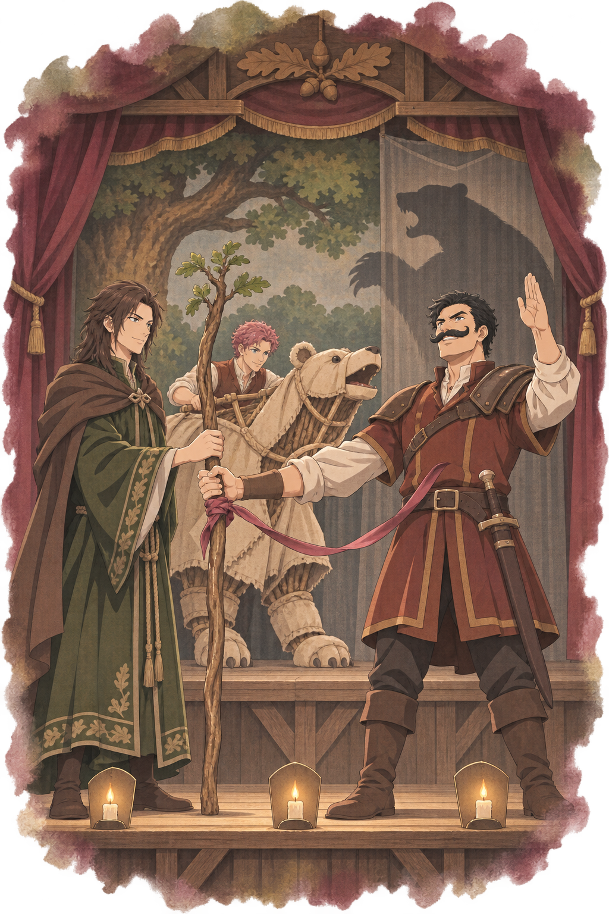

Aleria · Tír na nDoirí · Glannadeor
Der Eid von Glannadeor
Albisches Trauerspiel in fünf Aufzügen mit dem Klagelied „Unter Eichen, unter Stein“

Die Besetzung
- Aelir
- Fear Doirich
Ratsdruide, Liebender und trauernder Vater; derselbe Darsteller vor und nach dem Zeitsprung. - Roderich
- Madra Rua und seine verfluchte Bärengestalt
Der bronzene Reif verbindet den Krieger mit dem späteren Unhold. - Florian
- Púca / der befreite Brannoc
Große Bärenpuppe mit abnehmbarem dunklem Überwurf; nach der Erlösung erscheint das helle Fell. - Rhoswen
- Cormacs Tochter
Unbenannte Fürstentochter, später Fear Doirichs Frau und Mutter seines Sohnes. - Geraint
- Der Sohn Fear Doirichs
Erwachsener Druidenkrieger, der seine Feuerprobe gegen den Wunsch des Vaters sucht. - Cadfan
- Fürst Cormac Ui Talamh
Der frühantike Fürst dieser Sage, Herr Oseneachs. - Nuala
- Chorführerin und Klagestimme
Erzählt die Jahrhunderte und führt „Unter Eichen, unter Stein“. - Faelan
- Kriegsherr, Bote und Rabenstimme
Getrennte Nebenrollen mit sichtbarem Maskenwechsel. - Eleri
- Hof- und Dorfchor
Mit Rosalie, Samira, Sigrun und Sabjorn; Freier, Ratsleute und stumme Maskenrollen. - Rosalie
- Hof- und Dorfchor
Gesungene Antworten im Kehrvers. - Samira
- Hof- und Dorfchor
Ratsszene und Entfaltung des unterirdischen Ahnenbaums. - Sigrun
- Hof- und Dorfchor
Freier- und Dorfszenen, Wurzelkulisse im Schlussbild. - Sabjorn
- Hof- und Dorfchor
Bühnenkampf als Schattenbild, Wurzelkulisse im Schlussbild.
Regie und dramatische Arbeit: Elenid Awenfryn. Die sieben Söhne Cormacs erscheinen als sieben namenlose Eichenmasken; die Freier stammen aus anderen Fürstenhäusern. Die Rollen der Fürstentochter und des Sohnes bleiben ohne erfundenen Eigennamen.
I. Die sieben Söhne und die Tochter
Cormacs Halle
Sieben unbenannte Eichenmasken stehen hinter dem Fürstensitz. Die Tochter tritt neben Cormac. Fear Doirich wartet am Herd. Der Chor spricht über einer einzelnen gezupften Saite.
Chor: Als die Albenlande jung waren und ein König über die Alben herrschte, lag hier Tír na nDoirí, das Land der Eichenhaine. Oseneach gedieh unter Cormac Ui Talamh. Sieben Söhne hatte er und eine Tochter.
Cormac: Mögen die Speicher voll sein und die Wege offen. Ein Fürst besitzt den Frieden nur, solange seine Leute ihn teilen.
Tochter: Wieder stehen Freier vor dem Tor. Sie nennen die Häuser ihrer Väter und zählen ihre Siege.
Fear Doirich: Ein Hausname wärmt kein Herz, und ein Sieg hört keinem Kummer zu.
Tochter: Dann bleib noch am Feuer, Fear Doirich. Du hörst wenigstens zu.
Das Dekret
Dreimal erschüttert ein dumpfer Schlag die Halle. Ein Bote berichtet von monatlichen Angriffen. Hinter dem Tor erscheint der Schatten des Púca. Kriegsherr, Ratsdruide und übrige Ratsmänner versammeln sich.
Kriegsherr: Wieder ein Dorf. Wieder ein Hof. Diesmal stand er vor unseren Mauern.
Cormac: Dann soll das ganze Land mein Wort hören: Wer die Bestie erschlägt und uns von ihr befreit, erhält die Hand meiner Tochter.
Fear Doirich: Ich werde nach seinem Ursprung suchen, mein Fürst.
Chor: Krieger kamen aus fernen Ländern. Einer nach dem andern schwor. Einer nach dem andern ging. Die Wege gaben keinen zurück.
II. Der Handel im Bergwald
Das Geschenk
Madra tritt mit einem zugedeckten Korb vor die große Bärenpuppe. Ihr Maul wird sichtbar von Hand bewegt. Eine bemalte Tafel zeigt Glannadeor als noch bewohnte Festung.
Madra Rua: Ich bringe dir ein Geschenk, Herr dieser Berge, und einen Handel. Verschwinde aus Cormacs Land. Ich werde als dein Schlächter heimkehren, seine Tochter heiraten und Glannadeor empfangen. Von dort schicke ich dir Untertanen. Regelmäßig.
Púca: Nein.
Madra Rua: Dann mehr. Du sollst keinen Hunger kennen.
Púca: Nein.
Madra Rua: Cormacs Söhne. Einen nach dem andern. Sieben, wenn es sein muss.
Púca: Bring mir Fear Doirich.
Madra Rua: Den Ratsdruiden? Wie soll ich ihn dir bringen?
Púca: Sag ihm: Ein Fürst unter den Brannoc liegt im Fluch Zatrachs. Nur er könne ihn erlösen. Die Hoffnung auf Rettung wird ihn zu mir führen.
Die Bitte am Hof
Ein einzelner Stuhl und die sieben Eichenmasken bringen die Halle zurück. Madra kniet vor Cormac.
Madra Rua: Ich weiß nun, weshalb der Bär uns plagt. Ein Brannoc-Fürst ist von Zatrach verdorben. Fear Doirich muss mit mir ziehen. Gemeinsam werden wir den Fluch brechen.
Fear Doirich: Wenn unter dieser Qual ein Brannoc lebt, soll er nicht ohne Hilfe bleiben. Ich gehe mit dir.
Chor: So führte eine Lüge den Mann zur Wahrheit. Und der Mann, der sie sprach, ging seiner eigenen Gestalt entgegen.
III. Was ich gewinne, bleibe an mir
Die Vögel
Ein Rabenflügel an einer Stange folgt dem Druiden. Vogelrufe brechen ab, wenn Madra sich umwendet. Der Rabe spricht nur zu Fear Doirich.
Rabe: Ein Geschenk. Ein Handel. Untertanen. Sieben Söhne. Zuletzt dein Name.
Fear Doirich: Ich höre dich.
Madra Rua: Was flüstert der Wald?
Fear Doirich: Dass wir unseren Weg beinahe vollendet haben.
Der Eid
Der Druide zeichnet einen Kreis. Ein rotes Seidenband liegt zwischen der Bärenpuppe und Madra. Madras bronzener Reif bleibt deutlich sichtbar. Die Verwandlung entsteht durch Schatten, Mantel und Maskenwechsel.
Fear Doirich: Unter diesem Fluch lebt wirklich ein Brannoc. Aber du, Madra: Wie wirst du Cormac deinen Sieg beweisen, ohne Kopf und Fell?
Madra Rua: Ich werde einen Beweis finden.
Fear Doirich: Die fremde Macht dieses Bären könnte dein Zeugnis sein. Mit seiner Stärke würde man dir glauben.
Madra Rua: Seine Stärke? Auch gegen Männer? Auch gegen andere Fürsten?
Púca: Sprich deinen Willen, Krieger.
Fear Doirich: Lege die Hand auf meinen Stab. Sage vor Erde und Wurzeln, was du begehrst.
Madra Rua: Alles, was diesen Bären zum Herrn der Berge macht, beanspruche ich als meinen Lohn. Seine Macht soll meine Macht sein. Was ich hier gewinne, soll an mir bleiben.
Fear Doirich: Brannoc, erinnere dich deines alten Namens. Was dich unterwarf, verlasse dich. Was er beanspruchte, finde ihn.
Madra Rua: Was hast du mir gegeben?
Fear Doirich: Was du gefordert hast.
Chor: Der helle Bär stellte sich vor den Druiden. Der andere floh. Noch trug er den Reif.
Die Heimkehr
Fear Doirich steht erhöht hinter dem Rücken der hellen Bärenpuppe: der Ritt nach Áinmardh. Die Stadt empfängt ihn. Das Licht wird für kurze Zeit wärmer.
Cormac: Du hast das Land befreit und den Brannoc erlöst. Mein Wort soll gelten.
Tochter: Du bist zurückgekommen.
Fear Doirich: Ich dachte an dieses Feuer. Und an dich.
Chor: Sie wurden Mann und Frau. Sie bekamen einen Sohn. Der Vater lehrte ihn Wurzelwort und Kriegskunst. Der Chor singt den Kehrvers zunächst leise, wie ein fernes Wissen.
IV. Die Feuerprobe
Jahrhunderte
Die sieben Masken werden abgetragen. Die helle Festungstafel wird gewendet: ihre Rückseite zeigt Ruinen. Der Sohn tritt erwachsen mit Stab und Übungsschwert auf. Die Darsteller zeigen den Zeitwechsel durch Gewand und Haltung.
Chor: Jahrhunderte gingen. Wieder kam ein Grauen aus den Bergen: ein Bär mit dem Gesicht eines verwilderten Mannes. Dörfer fürchteten ihn, Tiere fielen ihm zum Opfer.
Sohn: Vater, dies soll meine Feuerprobe sein. Ich werde die Bestie erschlagen. Dann weißt du, dass ich deine Lehren verstanden habe.
Fear Doirich: Dein Können musst du mir nicht mit deinem Leben beweisen. Geh nicht.
Sohn: Du gingst einst selbst.
Fear Doirich: Und kenne seitdem den Preis eines Sieges.
Sohn: Ich werde zurückkommen.
Unter Glannadeor
Madras dunkle Bärengestalt erscheint vor den Ruinen. Der Sohn entreißt ihr den Reif. Der Kampf verschwindet hinter der Schattenwand. Ein Aufschrei, dann Stille. Der Chor berichtet den Tod; keine sichtbare Gewaltdarstellung.
Chor: In Glannadeor lagerte Madra Rua. Hier hatte er einst herrschen wollen. Der Sohn stellte ihn. Er riss ihm den Reif ab. Der Bär bezwang und fraß ihn.
Chor: Der Wind nahm den letzten Ruf. Der Stein behielt den Reif.
V. Kein Morgen für die Wurzeln
Der Fund
Fear Doirich findet ein zerrissenes Gewand und den bronzenen Reif. Die Bühnenwand öffnet den Blick in ein unterirdisches Gewölbe.
Fear Doirich: Dieses Tuch habe ich an seiner Schulter geschlossen.
Fear Doirich: Und diesen Reif sah ich an einer andern Hand. Madra. Madra Rua.
Fear Doirich: Ich ritt heim auf einem geheilten Bären. Hinter mir ging der Fluch in die Berge. Nun ist er mit dem Gewand meines Sohnes heimgekehrt.
Der Ahnenbaum
Fear Doirich zerreißt das äußere Trauergewand und sinkt hinter ein Wurzeltuch. Sein Tod geschieht in der Verhüllung. Aus dieser Stelle entfaltet das Ensemble den Baum entlang der Gewölbewände. Oberhalb bleibt die Ruine sichtbar, doch kein Zweig überschreitet die Decke.
Fear Doirich: Ich gab dem Unheil einen neuen Leib und nannte das Land geheilt. Nun hat mein eigenes Blut den Preis getragen. Möge keine Sonne mehr auf mich fallen, und mögen meine Wurzeln diesen Ort niemals verlassen.
Chor: Dort verschied er. Aus seinem Leib wuchs ein Ahnenbaum, um Mauern und Fundamente, durch Hallen und Stein. Kein lebender Zweig erblickte je das Tageslicht.
Chor: Madras Verderbnis ging an Nachkommen weiter. Von gewaltsam erzwungenen Paarungen mit Bärinnen erzählt die Sage. Madrúach nennt man diese Urgren. Selten werden sie heute gesehen, in den Bergen Celtigerns Wachts, wo sie arglosen Wanderern auflauern.
Chor: Der Chor singt die letzte Strophe, den Kehrvers und die Schlussklage von „Unter Eichen, unter Stein“. Eine einzelne Stimme beendet das Stück: Ich werde deine Eiche sein.
Das Schlusslied
Langsame Moll-Ballade, etwa 68–76 Schläge pro Minute, wiegender 6/8-Takt. Eine einzelne Erzählstimme, sparsame Harfe oder gezupfte Saiten, tiefer Bordun; der Chor antwortet mit dem Kehrvers. Nach der Heimkehr kurz heller, nach dem Zeitsprung wieder karg. Die letzte Klage beinahe unbegleitet.
Kehrvers
Ruh, mein Kind, im Berg so tief,
wo kein Morgen deinen Namen rief.
Weh dem Eid und weh dem Lohn —
Glannadeor behält den Sohn.
Schlussklage
Kein Licht für mich. Kein Heim für dich.
Die Wurzel hält, was einst zerbricht.
Schlaf ohne Wiege, ruh im Stein —
ich werde deine Eiche sein.